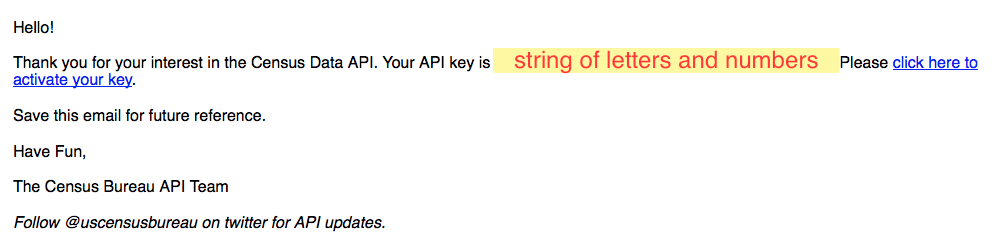
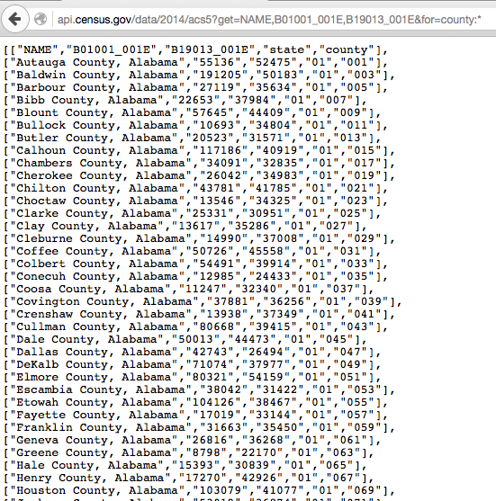

March 2, 2016
Save this email!
R can do everything for you besides reading the documentation
(But some functions can help with that)
http://api.census.gov/data/2014/acs5?get=NAME,B01001_001E,B19013_001E&for=county:*

install.packages("devtools")
devtools::install_github("hrecht/censusapi")
# Load the library
library("censusapi")
1. name
"acs5"
2. vintage - required for all datasets besides time series
2014
3. key
string emailed by Census
4. vars
c("NAME", "B01001_001E", "B19013_001E", "B17010_017E", "B17010_037E")
5. region
"county:*"
data2014 <- getCensus(name="acs5",
vintage=2014,
key=censuskey,
vars=c("NAME", "B01001_001E", "B19013_001E",
"B17010_017E", "B17010_037E"),
region="county:*")
View(data2014)